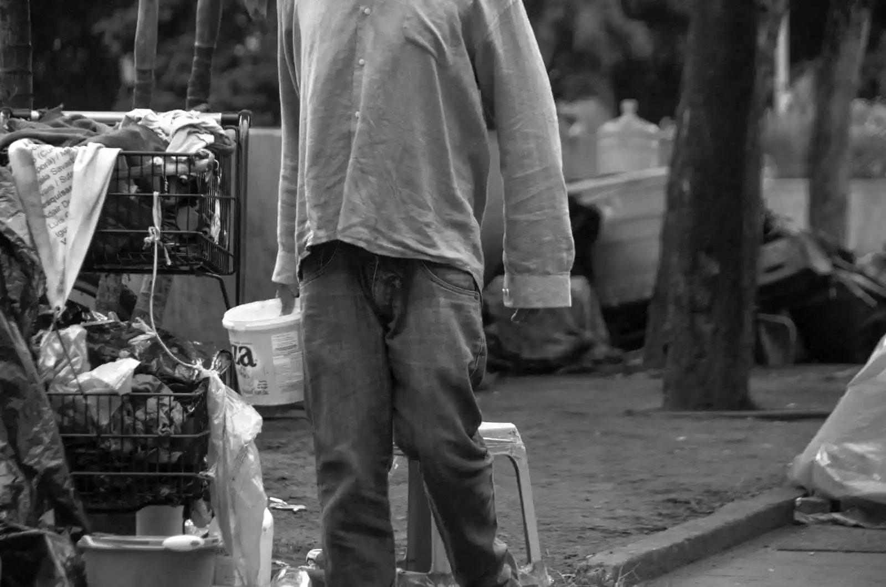

M uchos colombianos trabajan duro todos los días y aun así sienten que el dinero nunca alcanza. Las deudas aumentan, el salario desaparece rápido y progresar parece cada vez más difícil.
La realidad es que la pobreza no depende únicamente de la cantidad de dinero que entra en tu cuenta bancaria. También está muy relacionada con las costumbres económicas, las decisiones que tomas a diario, el entorno en el que vives y, la más importante, la forma en que utilizas tu tiempo.
Mientras algunas personas logran avanzar económicamente cuando entienden los comportamientos financieros, otras permanecen atrapadas durante años en los mismos errores.
Hoy más que nunca, internet y otros sistemas ofrecen oportunidades que décadas atrás eran imposibles de imaginar: aprender habilidades nuevas en cualquier lugar, generar ingresos adicionales sin depender de agentes externos y acceder a información gratuita todo el tiempo.
Entonces surge una pregunta importante: ¿qué hacen diferente las personas que sí logran progresar en Colombia?
Aunque el entorno influye, el cambio financiero suele comenzar cuando una persona decide modificar sus acciones diarias y su manera de usar el tiempo.
Normalmente, el cambio comienza cuando nos cansamos de la vida que tenemos y deseamos profundamente una transformación financiera real.
La mayoría de las personas nunca cambia su situación financiera porque repite los mismos patrones de comportamiento durante años y nunca toma la decisión de hacer algo diferente.
Estos son 8 pasos prácticos que pueden ayudarte a romper patrones financieros negativos y construir una vida económica más estable en Colombia.
- 1. Por qué muchas personas nunca logran salir de la pobreza en Colombia
- 2. La Cultura de las Apariencias Está Destruyendo las Finanzas de Muchos Colombianos
- 3. Cómo dejar de ser pobre en Colombia: 8 pasos reales sin promesas falsas
- 4. Evita negocios saturados y busca mercados con crecimiento
- 5. Rompe la mentalidad que te mantiene estancado
- 6. Deja de depender únicamente de un salario
- 7. Aprende a usar el tiempo como una herramienta para crecer
- 8. Aprende a controlar el dinero antes de ganar más
- 9. Aléjate de entornos que frenan tu crecimiento
- 10. Cuida tu energía para poder progresar
- 11. Aprende a pensar a largo plazo
- 12. La pobreza suele comenzar con hábitos que se repiten durante años
- 13. La mayoría de personas nunca construye una verdadera libertad financiera
Por qué muchas personas nunca logran salir de la pobreza en Colombia
En Colombia, muchas más personas de las que se cree realmente intentan huir de la pobreza a toda costa y, aunque no lo intenten de la forma correcta, existen muchos factores que juegan en contra.
No obstante, querer mejorar la situación económica puede hacer que muchos tomen casi cualquier camino que se les cruce enfrente y les prometa dinero inmediato, como trabajos mal pagados, entornos laborales con bajos niveles de protección para el trabajador y tener que soportar muchas cosas que vulneran los derechos del trabajador colombiano.
Por otro lado, muchos residentes son individuos que no tomaron muy buenas decisiones en el pasado y quizá ahora cargan con responsabilidades económicas que los aprietan cada fin de mes y no les dejan darse un respiro.
Diversos análisis sobre comportamiento financiero han demostrado que la gratificación inmediata suele reducir la capacidad de las personas para pensar en oportunidades de largo plazo y construir estabilidad económica.
La Cultura de las Apariencias Está Destruyendo las Finanzas de Muchos Colombianos
Además, existe una fuerte presión social relacionada con aparentar estabilidad económica incluso cuando la realidad financiera es complicada.
Muchas personas compran cosas que no necesitan para impresionar a otros mientras siguen sin ahorros, sin inversiones y sin un plan de crecimiento a largo plazo.
Hay que sumar también que la prisa por querer tener dinero inmediatamente enceguece a muchas personas y les impide ver las verdaderas posibilidades que existen en mercados que aún no han sido explotados.
En Colombia todavía existen muchos sectores con baja innovación y poca competencia digital, lo que también abre oportunidades interesantes para quienes buscan emprender. En Colombia aún existen grandes oportunidades para dar el primer paso y ocupar posiciones importantes en la creación de nuevas industrias.
Aprovechar los espacios del mercado que todavía no han sido ocupados por falta de competitividad colectiva puede convertirse en el inicio de una libertad financiera real, y no de una vida donde perder el tiempo parece más valioso que cualquier actividad productiva.
Cómo dejar de ser pobre en Colombia: 8 pasos reales sin promesas falsas

Evita negocios saturados y busca mercados con crecimiento
Negocios rentables para salir de la pobreza
Uno de los mayores errores de muchas personas que intentan cambiar su realidad financiera en Colombia es invertir tiempo y dinero en negocios demasiado saturados y con pocas posibilidades reales de crecimiento.
Tiendas de barrio, barberías, panaderías o negocios tradicionales pueden generar ingresos, pero en muchos casos tienen límites económicos muy bajos y dependen completamente del tiempo del dueño.
Por eso, cada vez más personas buscan negocios rentables en Colombia relacionados con internet, automatización, comercio electrónico, creación de contenido, inteligencia artificial y servicios digitales.
La diferencia no está solamente en trabajar más horas, sino en entrar a mercados con mayor potencial de crecimiento y menos saturación.
Hay personas que pasan 10 o 15 años trabajando más de 8 horas diarias sin lograr ahorrar, invertir o construir algo propio, porque siguen repitiendo modelos que ya no ofrecen grandes oportunidades de escalabilidad.
En Colombia existen muchos tipos de negocios, pero no todos ofrecen las mismas oportunidades de crecimiento.
El problema no suele ser la falta de oportunidades, sino seguir repitiendo modelos económicos saturados en un mercado que ya cambió.
Negocios saturados en Colombia vs oportunidades con alto potencial de crecimiento
| Negocios saturados | Negocios con mayor potencial |
|---|---|
| Tienda de barrio tradicional | Crear un sistema que ahorre tiempo o dinero |
| Barberías locales | Desarrollar una herramienta útil |
| Panaderías en zonas saturadas | Mejorar un producto o proceso existente |
| Salones de belleza sin diferenciación | Construir una red de distribución |
| Comidas rápidas, bares y restaurantes genéricos | Resolver un problema de forma escalable |
Elegir mejores oportunidades es importante, pero romper ciclos económicos negativos también requiere cambiar formas de actuar y dejar de repetir decisiones que mantienen los mismos resultados.
Muchas veces, el cambio económico no comienza trabajando más horas, sino dejando de seguir caminos que ya no ofrecen crecimiento real.
Rompe la mentalidad que te mantiene estancado
Por qué muchas personas nunca logran progresar económicamente
Muchas personas en Colombia crecieron en entornos donde sobrevivir era más importante que progresar. Por eso, para muchos, tener un salario básico, llegar apenas a fin de mes o vivir endeudado termina viéndose como algo normal.
También existe una fuerte presión social que castiga a quienes intentan pensar diferente. Cuando alguien quiere emprender, aprender nuevas habilidades o aspirar a ganar más dinero, muchas veces recibe críticas, burlas o frases como “eso nunca funciona” o “mejor consiga un trabajo estable”.
Con el tiempo, muchas personas terminan replicando y normalizando el mismo estilo de vida financiero de forma colectiva, abandonan sus metas antes de intentarlo y repiten los mismos problemas económicos durante años.
Salir de la pobreza no depende solamente del dinero. En muchos casos, también requiere romper ideas limitantes, aprender constantemente y dejar de aceptar una vida sin construir patrimonio.
Deja de depender únicamente de un salario
Aprender nuevas habilidades puede ayudarte a generar más ingresos
La mayoría de personas en Colombia pasan años trabajando duro esperando que algún día su situación económica mejore sola. Sin embargo, para millones de trabajadores, el salario apenas alcanza para sobrevivir mientras el costo de vida sigue aumentando.
Por eso, cada vez más personas están buscando formas de generar ingresos adicionales, aprender nuevas habilidades y aprovechar oportunidades que antes eran imposibles para alguien común.
Muchas veces, el problema no es la falta de esfuerzo, sino depender toda la vida de una sola fuente de ingresos en una economía donde perder el empleo o endeudarse puede destruir años de estabilidad.
Aprender algo nuevo, emprender o construir ingresos alternativos puede tardar tiempo, pero también puede convertirse en la diferencia entre sobrevivir siempre o empezar a avanzar económicamente.
Aprende a usar el tiempo como una herramienta para crecer
Los hábitos que mantienen a muchas personas atrapadas en la pobreza
Las personas pasan años atrapadas en una rutina donde el tiempo libre casi siempre termina consumido por muchas distracciones, redes sociales, fiestas, salidas, socializar, televisión o actividades que no generan ningún retorno económico.
Mientras tanto, otras personas utilizan aunque sea una o dos horas al día para aprender, vender algo, crear proyectos, conseguir clientes o construir nuevas fuentes de ingresos poco a poco.
Con el tiempo, esa diferencia aparentemente pequeña termina separando a quienes siguen sobreviviendo de quienes empiezan a avanzar financieramente.
Romper ciclos económicos negativos muchas veces no comienza con más dinero, sino con aprender a utilizar mejor el tiempo que la mayoría desperdicia todos los días.
Aprende a controlar el dinero antes de ganar más
Los gastos innecesarios que mantienen a muchas personas en la pobreza
En Colombia, una gran parte de la presión social gira alrededor de aparentar estabilidad económica incluso cuando la realidad financiera es completamente diferente.
Muchas personas gastan gran parte de su salario en celulares costosos, ropa de marca, motos difíciles de mantener, fiestas, licor o salidas constantes simplemente para demostrar una imagen de éxito frente a los demás.
El problema es que este tipo de gastos normalmente no ayudan a construir estabilidad financiera ni generan nuevos ingresos. Mientras tanto, las deudas aumentan, el ahorro desaparece y el progreso económico se vuelve cada vez más difícil.
Las personas que logran avanzar financieramente suelen utilizar su dinero de manera diferente: invierten en herramientas de trabajo, aprendizaje, negocios, ahorro o proyectos que puedan generar crecimiento a largo plazo.
Aléjate de entornos que frenan tu crecimiento
Por qué el entorno influye en tus hábitos financieros
El entorno influye mucho más de lo que la mayoría imagina. Pasar años rodeado de personas negativas, conformistas o sin metas claras puede terminar afectando la disciplina, la mentalidad y las decisiones financieras.
Muchas personas abandonan proyectos, dejan de aprender cosas nuevas o frenan sus objetivos simplemente porque viven rodeadas de críticas constantes, burlas o personas que creen que progresar es imposible.
Por el contrario, compartir tiempo con personas que quieren crecer, aprender, emprender o mejorar económicamente puede ayudarte a desarrollar mejores rutinas económicas, pensar más a largo plazo y mantener el enfoque incluso en momentos difíciles.
No se trata de rodearse de personas con dinero, sino de personas que tengan mentalidad de crecimiento y no normalicen quedarse estancadas toda la vida.
Cuida tu energía para poder progresar
El agotamiento físico y mental puede destruir tu productividad
Muchas personas quieren mejorar su situación económica mientras viven agotadas física y mentalmente todos los días.
Dormir poco, alimentarse mal, vivir estresado, pasar demasiadas horas consumiendo contenido basura o permanecer sedentario termina afectando la concentración, la disciplina y la capacidad de tomar buenas decisiones financieras.
Con el tiempo, el cansancio constante hace que muchas personas pierdan motivación, abandonen proyectos rápidamente y entren en ciclos de procrastinación difíciles de romper.
Cuidar la salud física y mental no es un lujo. Tener energía, claridad mental y estabilidad emocional puede ayudarte a trabajar mejor, pensar más a largo plazo y mantener disciplina incluso cuando los resultados todavía no llegan.
Aprende a pensar a largo plazo
La mentalidad de resultados inmediatos impide progresar
Uno de los errores más comunes es querer cambiar de vida en pocas semanas y frustrarse cuando los resultados no llegan rápido.
La mayoría de cambios importantes requieren tiempo: aprender habilidades, ahorrar dinero, construir reputación, mejorar prácticas personales y desarrollar proyectos que realmente puedan crecer.
Muchas personas comienzan motivadas, pero abandonan demasiado rápido porque esperan resultados inmediatos mientras siguen rodeadas de distracciones, problemas económicos y presión social.
Sin embargo, el avance económico real normalmente ocurre de forma gradual. En muchos casos, las mejores oportunidades aparecen después de meses o años de trabajo constante, cuando el esfuerzo acumulado finalmente empieza a generar resultados.
La pobreza suele comenzar con hábitos que se repiten durante años
Muchas personas pasan años viviendo exactamente las mismas rutinas, tomando las mismas decisiones y rodeándose de dinámicas personales que poco a poco destruyen cualquier posibilidad de estabilidad a largo plazo.
El problema no siempre es la falta de oportunidades, sino normalizar una vida donde el tiempo se desperdicia, el dinero desaparece rápidamente y el crecimiento personal deja de ser una prioridad.
Además, muchas personas creen que el cambio económico comienza con algo grande: conseguir contactos importantes, mudarse a otro lugar, estudiar una carrera costosa o esperar una oportunidad perfecta que transforme sus vidas de inmediato.
Sin embargo, la mayoría de cambios financieros reales comienza con pequeñas decisiones repetidas durante años. Igual que cualquier proceso de crecimiento, primero se aprende lentamente, después se mejora con constancia y solo con el tiempo comienzan a aparecer resultados más grandes.
Por eso, pensar que el éxito aparece primero mientras se ignoran los principios básicos para administrar el dinero suele ser uno de los errores que más mantiene a las personas atrapadas en la pobreza.
La mayoría de personas nunca construye una verdadera libertad financiera
Muchas personas pasan toda su vida sobreviviendo mes a mes sin construir activos, habilidades o fuentes de ingresos que realmente puedan cambiar su situación económica.
Mientras el tiempo avanza, millones de personas continúan atrapadas en ciclos de deuda, gastos innecesarios, dependencia total de un salario que consumen años completos sin generar progreso real.
Aprender cómo dejar atrás el estancamiento económico implica entender que el aumento de ingresos no suele aparecer por suerte, sino por acumulación: mejores decisiones, disciplina, aprendizaje constante y capacidad de adaptarse a un mundo cada vez más competitivo.
Internet, la tecnología y los nuevos mercados han creado oportunidades que antes no existían, pero solo quienes desarrollan habilidades, controlan sus costumbres diarias y actúan con constancia suelen aprovecharlas.
La diferencia entre seguir sobreviviendo o comenzar a crecer económicamente muchas veces depende de las decisiones pequeñas que una persona repite todos los días durante años.
No todas las personas logran salir de la pobreza, y muchas veces quienes sí lo consiguen entienden algo importante: el dinero solo empieza a generar verdadera libertad cuando deja de utilizarse únicamente para sobrevivir.
La diferencia aparece cuando una persona aprende a construir ingresos por encima del promedio, desarrolla habilidades que le permiten crecer y utiliza el dinero como una herramienta para dejar de depender toda la vida del mismo ciclo de esfuerzo, deuda y desgaste.
Artículos relacionados:
¿Quieres leer artículos similares? Selecciona uno y haz clic en "Ir"